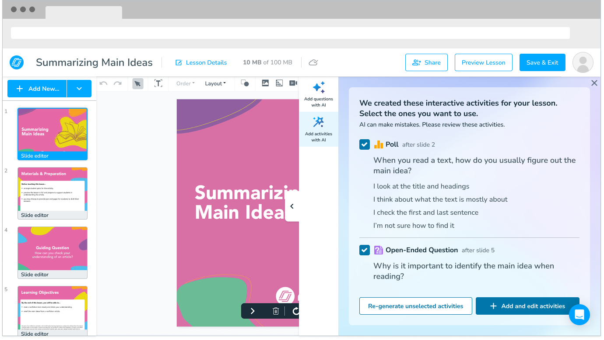
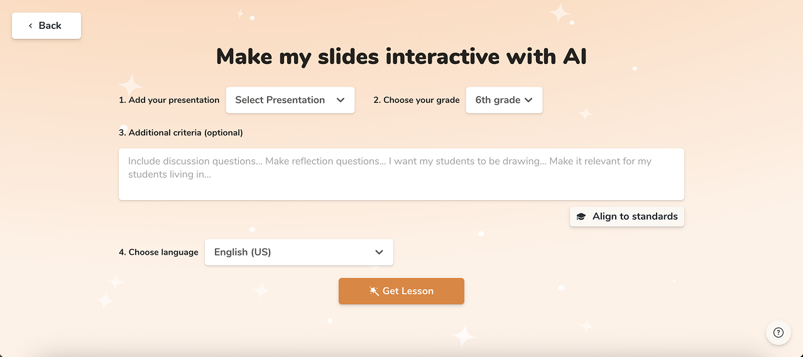
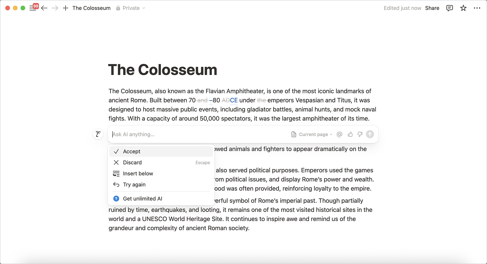
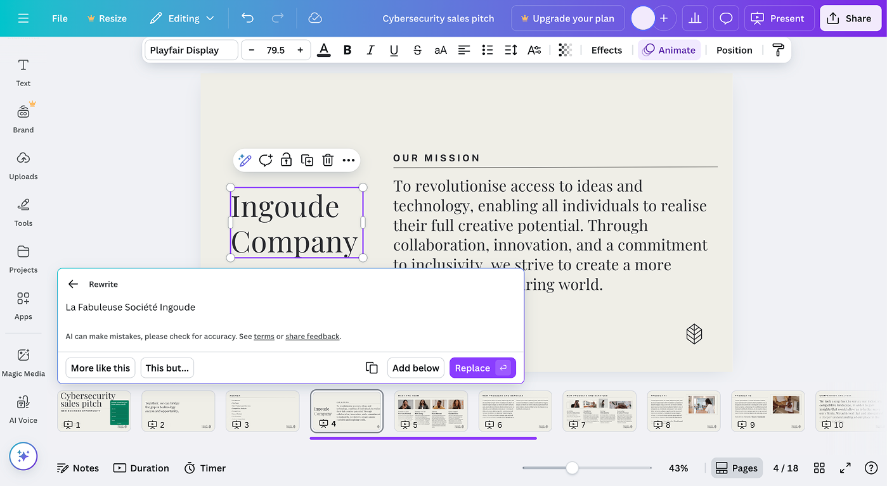
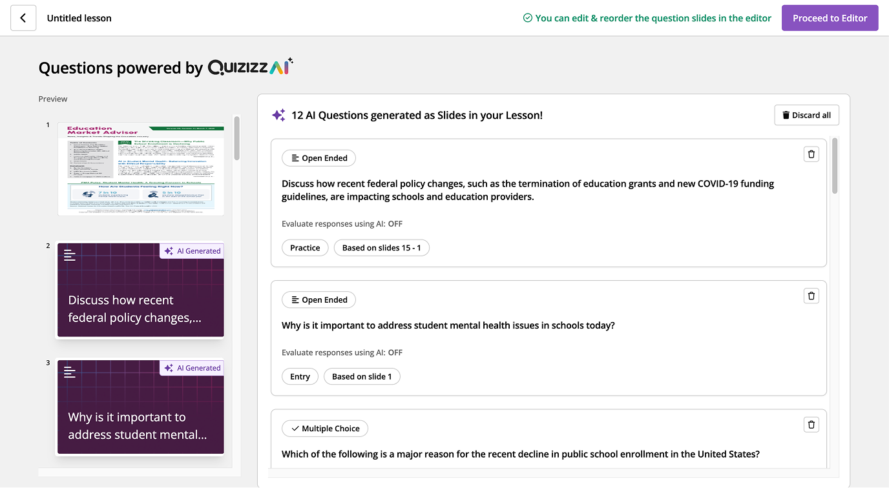
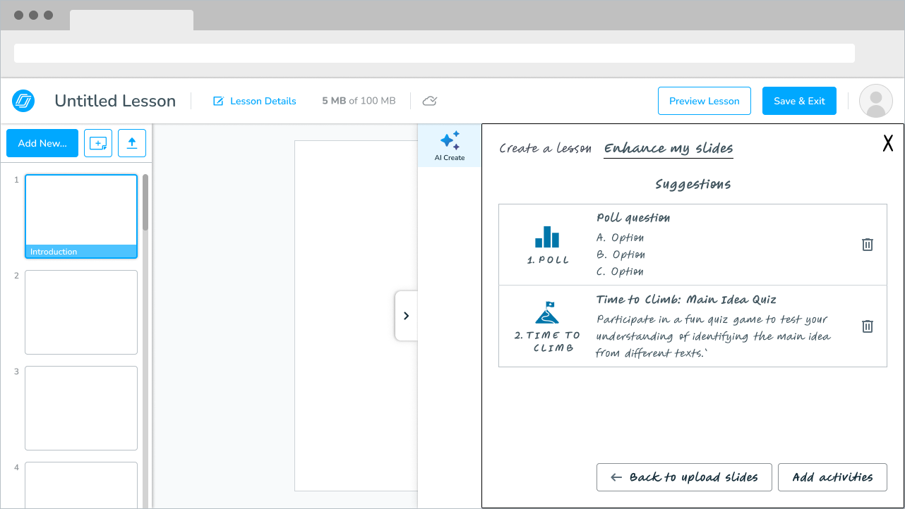
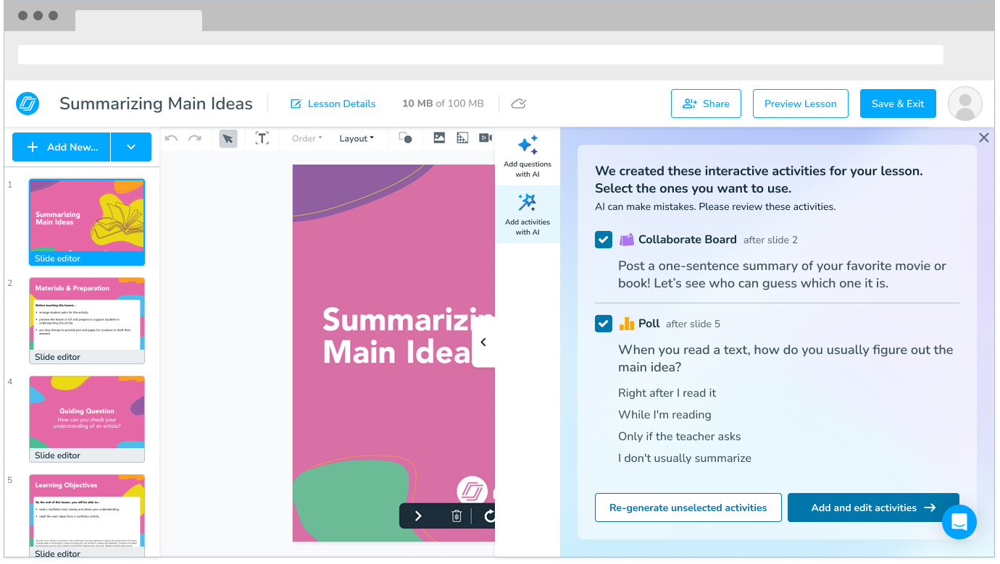
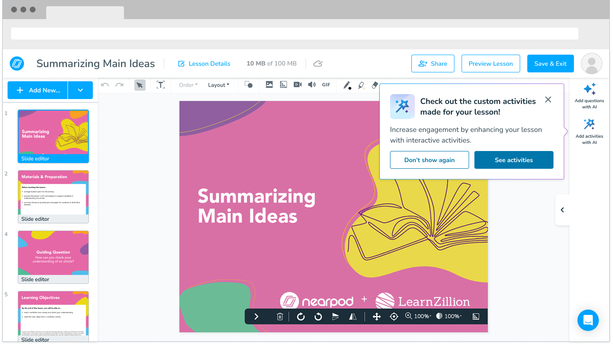
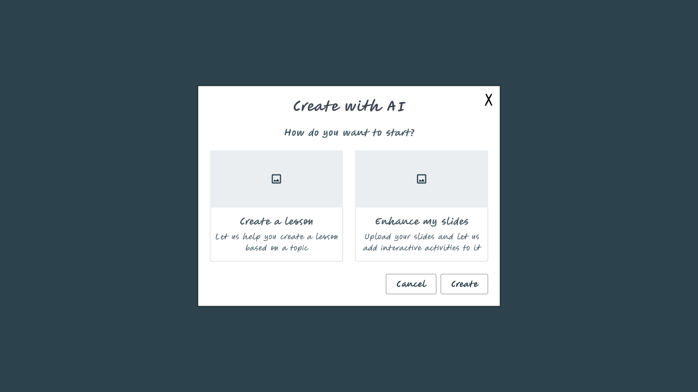

Nearpod / Renaissance Learning · May–June 2025

📷 Hero image — panel de sugerencias dentro del Lesson Builder'" />The AI Activity Suggestions panel inside the Lesson Builder — teachers can select, review, and add AI-generated activities without leaving their workflow.
Overview
Nearpod is an EdTech platform where teachers build and run interactive lessons. The problem: over 60% of lessons on the platform had no interactive activities — which defeats the core value of using Nearpod in the first place.
I designed a feature that scans a teacher's existing lesson content and suggests relevant activities to add, using AI. I worked in a two-designer team alongside Nicole, collaborating with two PMs, a UX researcher, and a UX writer. We went from kickoff to user-tested prototype in five weeks.
The problem
Teachers were uploading their presentations to Nearpod but not adding activities. Some didn't have time. Some didn't know where to start. Some were skeptical of AI-generated content and didn't trust it to match their material.
Our starting insight: if we could meet teachers inside their existing lesson, rather than asking them to create something new, we had a better chance of earning their trust.
Process
We moved fast. By day three we had sketches in front of the PMs — earlier than anyone expected. Nicole and I worked separately on initial ideas, then compared notes and found we were mostly aligned. That made the first round of decisions easy.
Early on we mapped three different AI features already in Nearpod and realized none of their names made it clear what each one did or how they differed. We looped in our UX writer — her recommendation: rename everything around the action, not the technology. "Add Activities with AI" instead of "AI Enhance."
We ran an unmoderated usability test with real teachers before handoff. One decision that shaped the test: we shifted the entry point from the upload flow to an existing lesson, based on the metric driving the project. If 60% of lessons lacked activities, the teachers who needed this most were the ones who already had lessons sitting there.
Competitive analysis — Curipod, Notion AI, Canva, Quizizz

📷 Curipod'" />
📷 Notion AI'" />
📷 Canva'" />
📷 Quizizz'" />Early wireframe → final design

📷 Wireframe'" />
📷 Final design'" />From early wireframe to final design — the core concept of an inline suggestions panel stayed consistent throughout.
Key decisions
Showing the feature even when it can't run
We debated whether to hide the entry point when a lesson didn't meet the criteria for AI suggestions. We decided to always show it — with a clear explanation of why it wasn't available and how to fix that. Hiding it would have made the feature feel unreliable or random.

📷 Entry point popover — the \'Check out the custom activities\' message'" />The entry point popover — shown proactively when a teacher opens a lesson without activities.
Exploring entry point options
We considered a modal to let teachers choose between creating a lesson from scratch or enhancing existing slides — before deciding a more integrated, contextual approach worked better for the MVP.

📷 Early modal proposal — Create a lesson / Enhance my slides'" />An early proposal we explored and set aside — options on the table, decision made consciously.
Scoping the MVP
We pulled two entry points out of scope: the upload flow and the lesson menu. Not because they weren't valuable, but because we didn't want to compete with a separate Activity Picker redesign happening at the same time, and we didn't want to overwhelm teachers with too many paths to the same place.
Handling edge cases in placement
When a teacher generates suggestions, we tell them where each activity will be placed. But what if they edit the lesson before adding them? If nothing changed, activities go where we promised. If the lesson changed, they go to the end — and a toast message explains why.
Results
An unmoderated usability test with 10 participants — 5 current Nearpod users and 5 non-users — validated the core flow before handoff with strong results across usability, trust, and intent to use.
10/10
understood the intent of the feature
10/10
likely or very likely to use it
10/10
able to choose which activities to add
9/10
satisfied with how activities were placed
"It takes out the guesswork for engagement."
Current Nearpod user
"I use ChatGPT all the time, but this is even better."
Non-Nearpod user
"It is absolutely crystal clear — it tells me what's gonna be added and where."
Current Nearpod user
"It cuts down on my time from having to create these activities."
Non-Nearpod user
"Another teacher called it their Nearpod co-teacher."
The research also validated our scope decision: 8 of 10 teachers preferred getting suggestions while actively building a lesson, which confirmed that pulling the home screen entry point from the MVP was the right call. The feature shipped with a measurement framework in place to track engagement, adoption, and quality after release — against a baseline of ~40% of lessons having no activities.
What I learned
Two designers, better decisions
Nicole and I complemented each other's strengths. Having someone to pressure-test ideas with in real time — not just in formal critiques — changed the quality of the decisions we made early on. Both of us watched every research session, which meant we could act on findings immediately without losing anything in translation.
Structure creates speed
We built a detailed UX/research schedule at the start, identified risks and open questions early, and ran weekly check-ins with PMs throughout. That rhythm meant we never lost a week to misalignment. While we waited for user test results, we used the time to start the handoff file — which let us move faster once the findings came in.
Naming is design
The conversation about what to call this feature took more time than expected, and it was worth every minute. The name was the first thing teachers would see, and it needed to do a lot of work.
Scope decisions are design decisions
Knowing what to leave out — and being able to articulate why — was as important as knowing what to build.